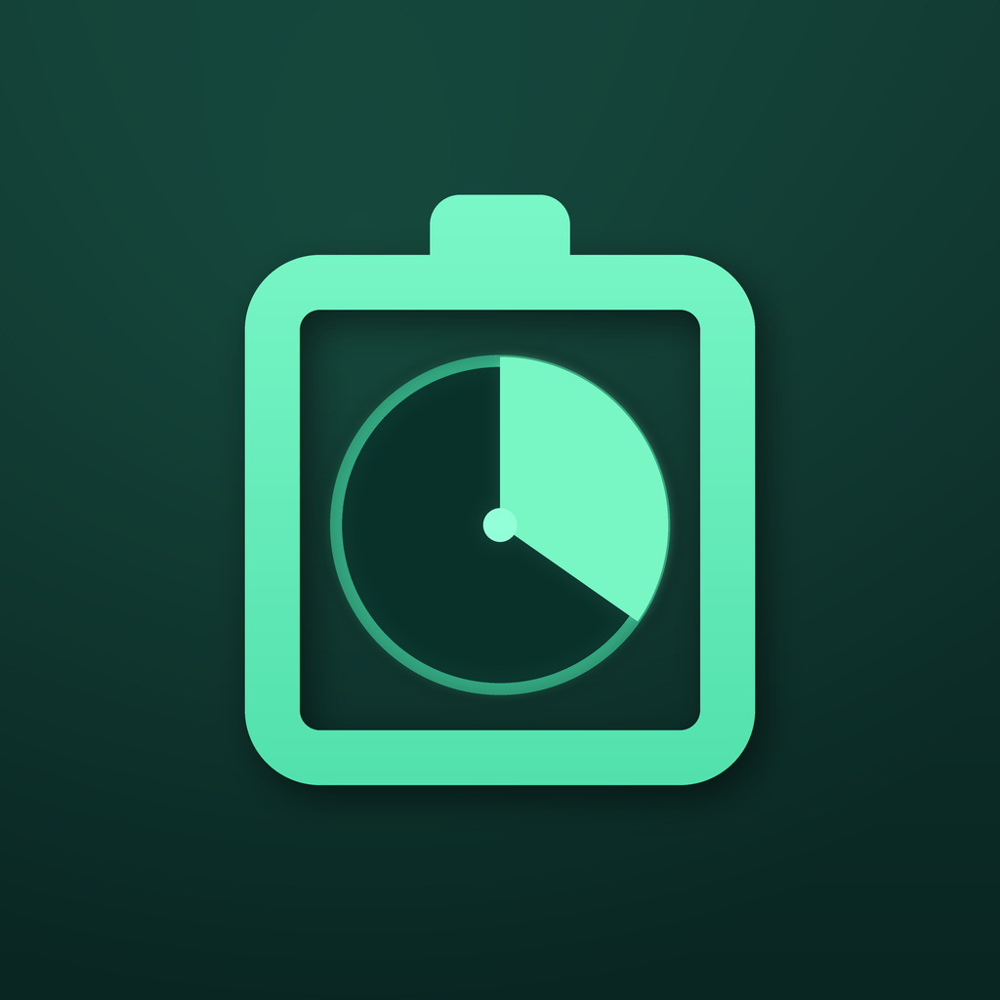

PowerLeft
Un calculateur pratique pour les stations électriques portables, les batteries et vos appareils.
Estimer l’autonomie de la batterie · Prévoir la capacité nécessaire
Estimez l’autonomie de votre batterie ou la capacité nécessaire pour le camping, les pannes, les voyages en RV et l’alimentation de secours.
Les résultats sont des estimations pour la planification. L’autonomie réelle dépend des appareils et des conditions.
Politique de confidentialité
Assistance
Choix de confidentialité
PowerLeft · healthmanagementprepare@gmail.com